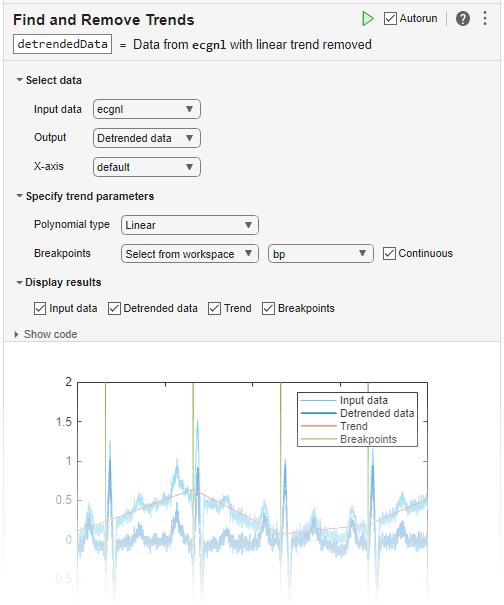

trenddecomp
Syntax
Description
LT = trenddecomp(A)A = LT+ST+R. In this
decomposition, LT is the long-term trend in the data,
ST is the seasonal, or oscillatory, trend (or trends), and
R is the remainder. LT is a vector with the same
length as A.
SSA is a useful algorithm when the periods of the seasonal trends are unknown. The SSA algorithm assumes that the input data is uniformly spaced.
You can use trenddecomp functionality interactively by adding the
Find and Remove
Trends task to a live script.
LT = trenddecomp(A,"ssa",lag)A and additionally
specifies a lag value, which determines the size of the matrix on which the singular value
decomposition is computed, as described in [1]. Larger values of
lag typically result in more separation of the trends.
The value of lag must be a scalar in the interval
[3,N/2] where N is the length of
A. If the period of the seasonal trend is known, then specify
lag as a multiple of the period.
LT = trenddecomp(A,"stl",period)A through seasonal trend decomposition using Loess
(STL), which is an additive decomposition based on a locally weighted regression, as
described in [2]. STL requires a period for the
seasonal trend. When the data has only one seasonal trend, specify
period as a scalar value. For multiple seasonal trends, specify
period as a vector whose elements are the periods for each seasonal
trend.
The STL algorithm assumes that the input data is uniformly spaced.
D = trenddecomp(T)trenddecomp
operates on each table variable separately. D is a table or timetable
whose variables contain the long-term trend, seasonal trends, and remainder for each
variable. trenddecomp returns multiple seasonal trends as one variable
in D, whose columns contain each seasonal trend.
Examples
Compute the long-term trend in a vector of data using singular spectrum analysis.
Create a vector of data A that contains a long-term trend, seasonal trend, and noise component.
t = (0:20)'; A = 3*sin(t) + t + 0.1*rand(21,1);
Compute the long-term trend. Plot the data and the long-term trend.
LT = trenddecomp(A); plot(t,A,t,LT) legend("Data","Long-term")

Decompose a vector of data into its long-term trend, two seasonal trends, and remainder using singular spectrum analysis.
Create a vector of data A that contains a long-term trend, two seasonal trends with different periods, and a noise component.
t = (1:200)'; trend = 0.001*(t-100).^2; period1 = 20; period2 = 30; seasonal1 = 2*sin(2*pi*t/period1); seasonal2 = 0.75*sin(2*pi*t/period2); noise = 2*(rand(200,1) - 0.5); A = trend + seasonal1 + seasonal2 + noise;
Decompose the data using the SSA algorithm. Plot the data, the trends, and the remainder.
[LT,ST,R] = trenddecomp(A); plot([A LT ST R]); legend("Data","Long-term","Seasonal1","Seasonal2","Remainder")

Decompose tabular data into its long-term trend, two seasonal trends, and remainder using the STL algorithm.
Create a table T whose variable data contains a long-term trend, two seasonal trends with different periods, and a noise component.
t = (1:200)'; trend = 0.001*(t-100).^2; period1 = 20; period2 = 30; seasonal1 = 2*sin(2*pi*t/period1); seasonal2 = 0.75*sin(2*pi*t/period2); noise = 2*(rand(200,1) - 0.5); data = trend + seasonal1 + seasonal2 + noise; T = table(data)
T=200×1 table
data
______
11.204
11.896
10.722
12.502
11.939
10.646
10.57
10.479
10.527
9.6793
7.1756
7.9505
7.1704
5.6206
5.8256
4.2817
⋮
Decompose the data using the STL algorithm. Plot the data, trends, and remainder.
D = trenddecomp(T,"stl",[20 30]); D = addvars(D,data); stackedplot(D) xlabel("t")

Input Arguments
Output Arguments
Tips
An additive decomposition model is appropriate for data where the seasonal variation is relatively constant throughout the time series. If the seasonal variation is proportional to the level of the time series, to use an additive decomposition model, use a log transformation on the data before the decomposition.
Alternative Functionality
Live Editor Task
You can use trenddecomp functionality interactively by adding the
Find and Remove
Trends task to a live script.

References
[1] Golyandina, Nina, and Anatoly Zhigljavsky. Singular Spectrum Analysis for Time Series. SpringerBriefs in Statistics. Berlin, Heidelberg: Springer Berlin Heidelberg, 2013. https://doi.org/10.1007/978-3-642-34913-3.
[2] Cleveland, R.B., W.S. Cleveland, J.E. McRae, and I. Terpenning. “STL: A Seasonal-Trend Decomposition Procedure Based on Loess.” Journal of Official Statistics 6 (1990): 3–73.
Version History
Introduced in R2021b